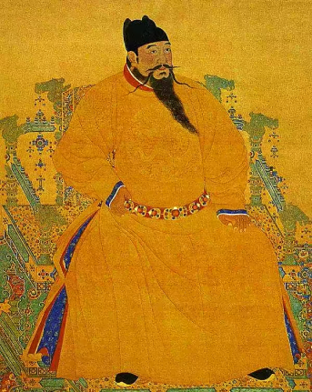
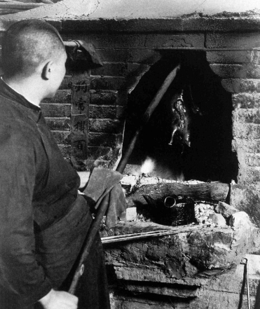
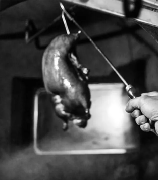
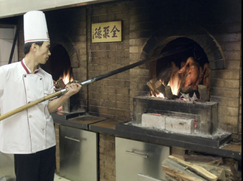
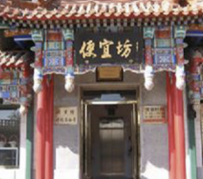
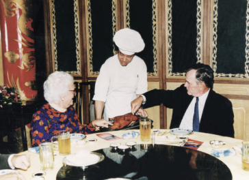
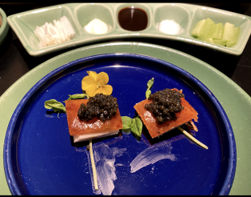
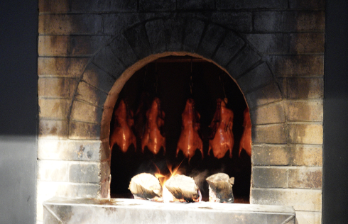

1275:
Roast duck is mentioned in Wu Zimu’s depiction of life in 13th-century Hangzhou (then
known as Lin’an).

1403:
The Ming dynasty Yongle Emperor moves his capital to Beijing, and the tradition of roast
duck arrives with it.


1761:
Imperial records show the Qianlong Emperor eats roast duck eight times over the course
of 13 spring days.

1861:
Quanjude roast duck restaurant is founded in Beijing by Yang Quanren.

1885:
Bianyifang Roast Duck restaurant is founded in Beijing.

1970:
Chinese premier Zhou Enlai serves Peking duck to visiting dignitaries, including Henry Kissinger and Richard Nixon.

2022:
Today's roast duck has been updated many times, roasted with jujube wood and served with caviar.
